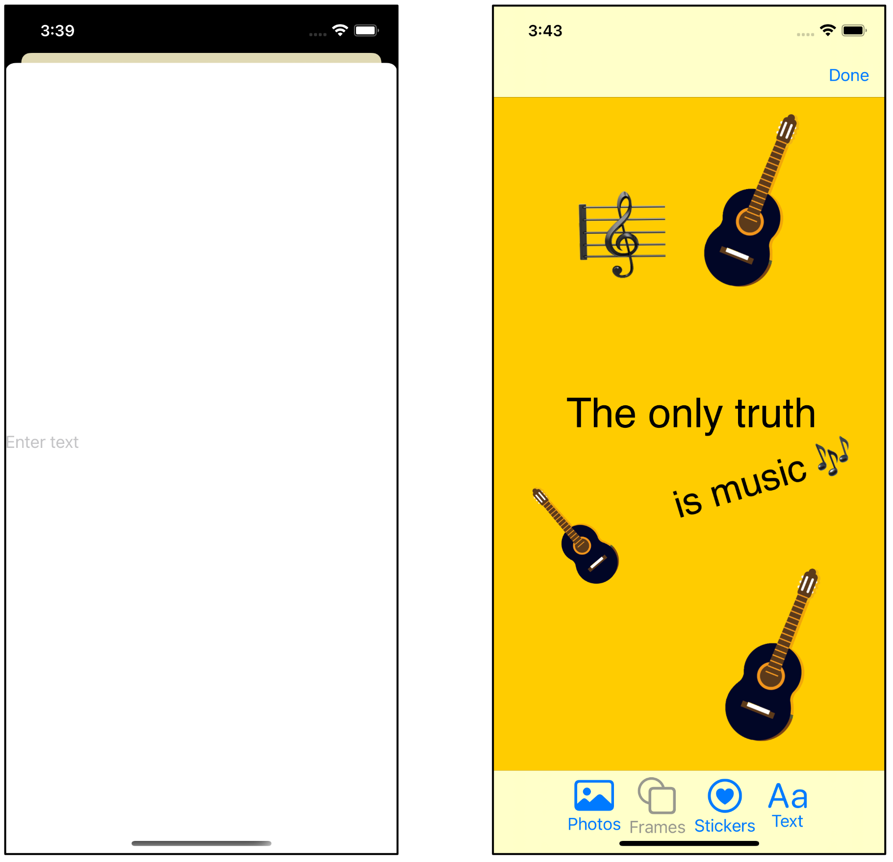

第19章：保存文件¶
你已经设置了大部分的用户界面，在这个阶段，如果能让卡片数据在应用会话之间持续存在，那就更好了。你可以选择一些方法来保存数据。
你已经在第1节中看过了UserDefaults和属性列表（plist）文件。这些更适合于简单的数据结构，而当你保存你的卡片时，你将会保存图像和元素的子数组。虽然Core Data可以处理这个问题，但另一种方法是使用JSON格式将数据保存到文件中。JSON的一个优点是，你可以很容易地在文本编辑器中检查文本文件，并检查你是否正确地保存了一切。
本章将介绍通过对卡片的JSON表示进行编码和解码，将JSON文件保存到你的应用程序的Documents文件夹。
启动项目¶
为了帮助你将UIImage保存到磁盘，启动项目在UIImage扩展中包含了调整图像大小的方法，以及保存、加载和删除图像文件。这些都在UIImageExtensions.swift中。
FileManagerExtensions.swift有一个静态属性，包含Documents文件夹的URL。
在本章的第一个挑战中，你将存储卡片的背景颜色。ColorExtensions.swift有几个方法可以将Color转换为RGB元素，可以帮助你完成这个任务。
如果你要用自己的代码继续学习上一章，请确保将这些文件复制到你的项目中。
保存的数据格式¶
当你保存数据时，每个卡片都会有一个扩展名为.rwcard的JSON文件。这个文件将包含构成卡片的元素列表。你将单独保存图像。磁盘上的数据存储将看起来像。
当你的应用程序第一次启动时，你将读入Documents文件夹中所有的.rwcard文件，并在滚动视图中显示它们。当用户点击选中的卡片时，你将处理该卡片的元素并加载相关的图像文件。
何时保存数据¶
本节中你将学习的技能：何时保存数据；ScenePhase
你有两种方法可以进行，每一种都有其优点和缺点。
你可以选择每次改变任何东西时都保存卡片文件，如添加、移动或删除元素。这意味着你在磁盘上的数据始终是最新的。缺点是你的保存会分散在你的应用程序中。
另外，你也可以选择在你真正需要的时候保存。
- 当
CardDetailView消失的时候，也就是用户点击Done的时候。 - 当应用程序因用户切换应用程序或外部事件（如一个电话）而变得不活跃时。
这种方法的缺点是，如果你的应用程序在完成保存之前就崩溃了，那么用户所做的最后几个改动可能不会被记录。在测试时你还需要记住，在你按下Done之前，应用程序不会在模拟器中保存。
在这个应用程序中，你将选择一种混合方法。每当你创建或删除卡片数据时，你都会执行第一种保存方法。这主要是因为要保存图像元素的UIImage。当你从照片或贴纸模式中选择UIImage时，你将保存UIImage，并将文件ID存储在ImageElement结构中。为了保持数据的完整性，最好是将ImageElement与UIImage同时存储。
然而，元素的移动和大小调整是经常发生的，每次保存都是一种开销。为了保存转换数据，你将选择第二种方法：当用户点击完成或离开应用程序时保存。
当用户点选完成时进行保存¶
➤ 打开Card.swift，在Card中创建一个新方法：
func save() {
print("Saving data")
}
在本章后面，你会回到这个方法来执行保存。
➤ 打开CardDetailView.swift，在body内的content上添加一个新的修改器：
.onDisappear {
card.save()
}
➤ 构建和运行，点一个卡，然后点完成。你会看到控制台中出现"保存数据"。
使用ScenePhase来检查操作状态¶
当你退出应用程序时，令人惊讶的是，视图并没有执行onDisappear(_:)，所以卡片不会被保存。但是，你可以通过环境来检查你的应用程序处于什么状态。
➤ 还是在CardDetailView中，添加一个新的环境属性：
@Environment(\.scenePhase) private var scenePhase
scenePhase是EnvironmentValues的一个有用成员。它是一个有三种可能值的枚举。
active：场景处于前台。inactive：场景应该暂停。background：场景在用户界面中不可见。
当scenePhase变成inactive时，你将进行保存。
➤ 在你之前添加的.onDisappear之前给content添加一个新的修改器：
.onChange(of: scenePhase) { newScenePhase in
if newScenePhase == .inactive {
card.save()
}
}
onChange(of:)在scenePhase改变时被调用。如果改变为inactive，则保存卡片。
➤ 构建并运行，点击一个卡片来打开它，然后从底部向上滑动来退出你的应用程序。你应该看到控制台信息"保存数据"。
➤ 返回到模拟器中的应用程序。它将在你离开的地方恢复到卡内。没有办法在模拟器上模拟电话，但你可以激活Siri来测试外部事件。选择Device ➤ Siri，你会再次看到控制台信息"保存数据"。
现在你已经实现了你的应用程序的保存部分的骨架。本章的其余部分将带你完成数据的编码和解码，以便你可以执行 save()。
JSON文件¶
在本节中你将学到的技能：JSON格式
JSON是JavaScript Object Notation的首字母缩写。JSON数据的格式是这样的：
{
"identifier1": [data1, data2, data3],
"identifier2": data4
}
每个data项可以是一个嵌套的JSON块。
为了了解将简单的数据保存到JSON文件有多容易，你将创建一个临时结构并保存它。
Codable¶
在本节中你将学到的技能。可编码；可解码
Codable协议是Decodable & Encodable的一个类型别名。当你的结构符合Codable时，你就符合了这两个协议。正如它的名字所暗示的，你可以使用Codable来对外部文件的数据进行编码和解码。
➤ 打开CardsApp.swift，在文件的末尾添加这段代码：
struct Team: Codable {
let names: [String]
let count: Int
}
let teamData = Team(
names: [
"Richard", "Libranner", "Caroline", "Audrey", "Manda"
], count: 5)
在你看到Codable是如何工作的之后，你将删除这段代码，并将你的知识应用到你的应用程序中更复杂的数据。
这个结构包含JSON支持的类型的直接数据--一个String的数组和一个Int。Team符合Codable，并使Team成为可以自我编码和解码的类型。
Encoding¶
➤ 在Team中，创建一个新的方法：
static func save() {
do {
// 1
let encoder = JSONEncoder()
encoder.outputFormatting = .prettyPrinted
// 2
let data = try encoder.encode(teamData)
// 3
if let url = FileManager.documentURL?
.appendingPathComponent("TeamData") {
try data.write(to: url)
}
} catch {
print(error.localizedDescription)
}
}
通过这个代码：
- 初始化
JSON编码器。prettyPrinted意味着编码后的数据将更容易被你阅读。 - 将
teamData的数据编码为Data类型的字节缓冲区。 - 把数据写到
Documents文件夹中一个叫做TeamData的文件中。
➤ 在CardsApp中，创建一个临时初始化器：
init() {
Team.save()
}
这将在应用程序的一开始就保存团队数据，以便你可以检查它。
➤ 在body中，为CardsView()添加一个新的修改器：
.onAppear {
print(FileManager.documentURL ?? "")
}
你打印出Documents文件夹的URL，这样你就可以找到你保存的文件。
➤ 构建并运行该应用程序。突出显示显示在调试控制台中的文档URL，然后右键单击它并选择Services ➤ Show in Finder。将父文件夹拖到你的收藏夹侧边栏，因为你在测试时将经常访问这个文件夹。
➤ 在Finder中，右键单击TeamData，在TextEdit中打开文件：
{
"names" : [
"Richard",
"Libranner",
"Caroline",
"Audrey",
"Manda"
],
"count" : 5
}
这是你以JSON格式存储的结构数据。这些标识符是你在结构中使用的名字。正如你所看到的，使用Codable，存储数据是非常容易的。
Decoding¶
读回数据也同样简单。
➤ 在Team中添加一个新方法：
static func load() {
// 1
if let url = FileManager.documentURL?
.appendingPathComponent("TeamData") {
do {
// 2
let data = try Data(contentsOf: url)
// 3
let decoder = JSONDecoder()
// 4
let team = try decoder.decode(Team.self, from: data)
print(team)
} catch {
print(error.localizedDescription)
}
}
}
通过这个代码：
- 获取
URL。 - 从
URL中读取数据到一个Data类型。 - 这一次你要进行解码，所以你要初始化一个
JSON解码器。 - 将数据解码到一个
Team的实例中，并将其打印到控制台，这样你就可以看到你所解码的数据。
➤ 在CardsApp中，将init()改为：
init() {
Team.load()
}
➤ 构建并运行，并看到从TeamData加载的新实例Team在控制台中打印出来，在Documents URL之前。
你可以看到，使用Codable保存和加载数据的理论非常简单。但自然地，对于现实生活中的数据，总是有一些复杂的情况。
Encoding和decoding自定义类型¶
本节中你将学习的技能：编码；解码；compactMap(_:)
你想存储的数据类型必须符合Codable。如果你查看Team所包含的属性的开发者文档，即String和Int，你会发现它们都符合Decodable和Encodable。
只存储Codable类型的自定义类型不存在问题。但是你的一个自定义类型包含了不符合Codable的类型，那怎么办？
在继续之前，请删除您创建的样本Team代码。
➤ 在CardsApp.swift中，删除init()，所有的Team和teamData。
➤ 打开Transform.swift，添加这个新的扩展：
extension Transform: Codable {}
你会得到一个编译错误。"Transform类型不符合协议Decodable"。
Transform包含两个数据类型。CGSize和Angle。当你检查文档时，你会发现CGSize符合Encodable和Decodable，而Angle则不符合。
当你的自定义类型符合Codable时，有两个必要的方法：init(from:)和encode(to:)。
当你的自定义类型中的所有类型都符合Codable时，那么你所要做的就是给你的自定义类型添加Codable一致性，Codable将自动合成（创建）初始化器和编码器方法。
当结构中包含不符合Codable的类型时，你必须自己实现这两个合成的方法。
➤ 在扩展组中，创建一个名为AngleExtensions.swift的新Swift文件。
➤ 将代码替换为：
import SwiftUI
extension Angle: Codable {
public init(from decoder: Decoder) throws {
self.init()
}
public func encode(to encoder: Encoder) throws {
}
}
你将Angle顺应为Codable，并提供两个必要的方法。因为所有Transform使用的类型现在都是Codable，你的代码现在可以编译了。然而，你刚刚创建的编码器和解码器方法并没有什么用处。你必须告诉编码者如何对你想要保存和加载的每个属性进行编码和解码。
要做到这一点，你要创建一个符合CodingKey的枚举，列出你想要保存的所有属性。
➤ 将此添加到Angle扩展中：
enum CodingKeys: CodingKey {
case degrees
}
你只列出你想保存和恢复的属性。radians是另一个Angle属性，但是Angle可以从degrees内部构建，所以你不需要存储它。
➤ 将此添加到 encode(to:)：
var container = encoder.container(keyedBy: CodingKeys.self)
try container.encode(degrees, forKey: .degrees)
你使用CodingKeys创建一个编码器容器。然后你对degrees进行编码，它的类型是Double。这是一个Codable类型，所以容器可以对其进行编码。
解码是类似的。
➤ 将init(from:)的内容替换为：
let container = try decoder.container(keyedBy: CodingKeys.self)
let degrees = try container
.decode(Double.self, forKey: .degrees)
self.init(degrees: degrees)
你创建一个解码器容器来解码数据。由于degrees是一个Double，你解码一个Double类型。然后，你可以根据解码后的度数初始化Angle。
有了Angle的处理，并且CGSize已经符合Codable，Transform现在能够合成编码和解码方法，并对自己进行编码和解码，所以你的应用程序现在可以编译了。
你最终将保存一个Card，所以数据层次中的所有类型都需要是Codable。从数据结构层次中的Transform往上走，你要处理的下一个结构是ImageElement。
编码ImageElement¶
➤ 打开CardElement.swift，看看ImageElement。
当保存一个图像元素时，你不需要保存UUID，因为当你加载这个元素时，它将被重新构建。你将保存转换，它现在是Codable。然而，Image和AnyShape则不是。在加载Image的时候，你可以访问UIImage，而且很容易将其保存到文件中并记录文件名。
➤ 给ImageElement添加一个新的属性：
var imageFilename: String?
这将保持保存的图像文件的名称，这将是一个UUID字符串。
➤ 打开Card.swift并将 addElement(uiImage:) 替换为：
mutating func addElement(uiImage: UIImage) {
// 1
let imageFilename = uiImage.save()
let image = Image(uiImage: uiImage)
// 2
let element = ImageElement(
image: image,
imageFilename: imageFilename)
elements.append(element)
}
与以前的代码相比，变化是：
- 你现在使用
UIImageExtensions.swift中提供的代码将UIImage保存到一个文件中。uiImage.save()将PNG数据保存到磁盘并返回一个UUID字符串作为文件名。在保存之前，save()调整了大图片的大小，因为你不需要为卡片存储全分辨率。 - 你用加载的
Image和字符串文件名创建新元素。
当用户删除该元素时，你还需要从磁盘中删除图像文件。
➤ 在remove(_:)中，将此添加到方法的顶部：
if let element = element as? ImageElement {
UIImage.remove(name: element.imageFilename)
}
你检查该元素是一个ImageElement，并使用UIImageExtensions.swift中提供的方法从磁盘中删除该文件。
➤ 回到CardElement.swift中，在ImageElement后面添加一个新的扩展：
extension ImageElement: Codable {
}
当在一个结构的主定义中添加第二个初始化器时，你会失去默认的初始化器，必须自己重新创建。然而，给扩展添加初始化器就没有这个效果了。当你将ImageElement符合Codable时，你提供了解码的初始化器init(from:)。通过向这个扩展添加初始化器，你可以同时保留默认的初始化器和新的解码器。
➤ 添加CodingKey枚举，包含要保存到ImageElement的属性：
enum CodingKeys: CodingKey {
case transform, imageFilename, frame
}
你将把变换、文件名和框架保存到磁盘。没有必要存储图像元素的ID，因为它可以在你加载元素时生成。当你加载元素时，你也将从存储的图像文件中重新创建Image。
➤ 添加解码器：
init(from decoder: Decoder) throws {
let container = try decoder
.container(keyedBy: CodingKeys.self)
// 1
transform = try container
.decode(Transform.self, forKey: .transform)
// 2
imageFilename = try container.decodeIfPresent(
String.self,
forKey: .imageFilename)
// 3
if let imageFilename = imageFilename,
let uiImage = UIImage.load(uuidString: imageFilename) {
image = Image(uiImage: uiImage)
} else {
// 4
image = Image("error-image")
}
}
经历了解码的过程：
- 对变换进行解码。它是
Codable的，所以它自己会处理。 - 对图像文件名进行解码。这是一个可选项，如果你试图对不存在的东西进行解码，它将抛出一个错误。使用
decodeIfPresent(_:forKey:)检查它是否存在。 - 如果文件名存在，使用文件名加载图像。
- 如果加载图像有错误，使用
Assets.xcassets中的错误图像。
➤ 将编码器添加到 ImageElement Codable扩展中：
func encode(to encoder: Encoder) throws {
var container = encoder.container(keyedBy: CodingKeys.self)
try container.encode(transform, forKey: .transform)
try container.encode(imageFilename, forKey: .imageFilename)
}
这里你要对变换和文件名进行编码。frame还不是Codable，所以你将在一会儿添加它。
解码和编码卡片¶
➤ 打开Card.swift，添加一个新的扩展名，并添加要保存的属性列表：
extension Card: Codable {
enum CodingKeys: CodingKey {
case id, backgroundColor, imageElements, textElements
}
}
对于Card，你将保存ID。这将是你存储所有数据的JSON文件的名称，所以跟踪这个ID以确保数据的完整性是很重要的。你将在本章末尾的第一个挑战中存储背景颜色。你还将在两个独立的数组中存储图像元素和文本元素。
➤ 首先添加解码器：
init(from decoder: Decoder) throws {
let container = try decoder
.container(keyedBy: CodingKeys.self)
// 1
let id = try container.decode(String.self, forKey: .id)
self.id = UUID(uuidString: id) ?? UUID()
// 2
elements += try container
.decode([ImageElement].self, forKey: .imageElements)
}
通过解码器：
- 对保存的
id字符串进行解码，从UUID字符串中恢复`id'。 - 加载图像元素的数组。你使用
+=操作符来添加到任何可能已经存在的元素，以防你先加载文本元素。
由于你要恢复id，你需要把它变成一个var。
➤ 在Card中，将let id = UUID()改为：
var id = UUID()
➤ 将编码器添加到Card的Codable扩展中：
func encode(to encoder: Encoder) throws {
var container = encoder.container(keyedBy: CodingKeys.self)
try container.encode(id.uuidString, forKey: .id)
let imageElements: [ImageElement] =
elements.compactMap { $0 as? ImageElement }
try container.encode(imageElements, forKey: .imageElements)
}
这里你把id编码为UUID字符串。你还可以使用compactMap(_:)从elements中提取所有的图像元素。
Swift Dive: compactMap(_:)¶
compactMap(_:)返回一个数组，其中包含所有符合闭包条件的非空元素。$0代表每个元素。
当代码比上面的更复杂时，你可以用以下方式代替闭包：
let imageElements: [ImageElement] =
elements.compactMap { element in
element as? ImageElement
}
这将非描述性的$0替换为element。
该代码等同于：
var imageElements: [ImageElement] = []
for element in elements {
if let element = element as? ImageElement {
imageElements.append(element)
}
}
使用compactMap(_:)的最大好处是imageElements是一个常数。这更安全，因为你不能在以后的时间里意外地将数据添加到其中。一旦你习惯了使用map(_:)和filter(_:)等数组方法，它的代码也会更少，更容易阅读。必要时，你可以将它们组合在一起，从复杂的操作中创建数组。如果你对for循环比较熟悉，那么你可以用这些方法代替。
保存卡片¶
在所有的编码和编码都到位后，你终于可以填写save()了。
➤ 还是在Card.swift中，将save()替换为：
func save() {
do {
// 1
let encoder = JSONEncoder()
// 2
let data = try encoder.encode(self)
// 3
let filename = "\(id).rwcard"
if let url = FileManager.documentURL?
.appendingPathComponent(filename) {
// 4
try data.write(to: url)
}
} catch {
print(error.localizedDescription)
}
}
为了保存数据，你：
- 设置
JSON编码器 - 设置一个
Data属性。这是一个缓冲区，可以容纳任何类型的字节数据，也是你将写入磁盘的内容。用编码后的Card填充数据缓冲区。 - 文件名将是卡片的
ID加上一个.rwcard的扩展名。 - 把数据写到文件中。
只要卡片有变化，就执行这个方法。
➤ 添加：
save()
到最后：
remove(_:)addElement(uiImage:)update(_:frame:)
当用户按下完成按钮时，你已经在调用save()，而且，当他退出应用程序和场景阶段改变时，也在调用save()。
➤ 在模拟器中构建和运行。
➤ 在Finder中打开文档文件夹。文件夹的路径在控制台中打印出来，但你应该在你的收藏夹侧边栏中看到这个文件夹。
➤ 在模拟器中，选择绿卡并添加一张新的照片。(不要使用粉红色的花，因为目前这种文件格式不起作用。)当卡片添加新元素时，它会将照片保存为一个PNG文件，并将自己保存为一个扩展名为.rwcard的文件。在Finder中，用TextEdit打开这个文件--你应该可以直接双击它来打开它。
{
"id":"6D924181-ABFC-457A-A771-984E7F3805BD",
"imageElements":[
{
"imageFilename":null,
"transform":{
"offset":[
4,
-137
],
"size":[
412,
296
],
"rotation":{
"degrees":-6.0000000000000009
}
}
},
{
"imageFilename":"8808F791-E832-465D-911A-A250B91A5141",
"transform":{
"offset":[
0,
0
],
"size":[
250,
180
],
"rotation":{
"degrees":0
}
}
}
]
}
你会看到类似上面的内容。这就是前面描述的JSON格式。你可以看到你正在保存卡片id，它与文件名相匹配，还有，两个imageElements的数组。第一个元素的文件名为null，因为它是由预览数据提供的，从未保存到文件中。第二个元素将有添加的照片和保存的文件名。
如果你想使输出更容易被人阅读，在save()中，初始化encoder后，你可以添加：
encoder.outputFormatting = .prettyPrinted
加载卡片¶
本节中你将学习的技能：文件枚举；等价物
现在你已经保存了一张卡片，你将通过加载它们来启动应用程序。
文件枚举¶
为了列出卡片，你将遍历所有扩展名为.rwcard的文件，并将它们加载到卡片数组中。
➤ 打开CardStore.swift，用加载文件的方法创建一个新的扩展：
extension CardStore {
// 1
func load() -> [Card] {
var cards: [Card] = []
// 2
guard let path = FileManager.documentURL?.path,
let enumerator =
FileManager.default.enumerator(atPath: path),
let files = enumerator.allObjects as? [String]
else { return cards }
// 3
let cardFiles = files.filter { $0.contains(".rwcard") }
for cardFile in cardFiles {
do {
// 4
let path = path + "/" + cardFile
let data =
try Data(contentsOf: URL(fileURLWithPath: path))
// 5
let decoder = JSONDecoder()
let card = try decoder.decode(Card.self, from: data)
cards.append(card)
} catch {
print("Error: ", error.localizedDescription)
}
}
return cards
}
}
翻阅代码：
- 你将从
load()返回一个Card的数组。这些将是Documents文件夹中的所有卡片。 - 设置
Documents文件夹的路径，并列举该文件夹中的所有文件和文件夹。 - 筛选文件，以便只保留扩展名为
.rwcard的文件。这些是Card文件。 - 将每个文件读入一个
Data变量。 - 从
Data变量中解码每个Card。你已经做了所有艰苦的工作，使Card和它的子类型使用的所有属性都是Codable，所以你可以简单地将解码后的Card添加到你正在建立的数组中。
➤ 将init(defaultData:)的实现替换为。
cards = defaultData ? initialCards : load()
你可以选择从磁盘加载卡片，而不是使用默认数据。
添加一个新的卡片¶
你需要一个方法来添加一个新的卡片。当你把这个新卡添加到cards时，它将只保留背景颜色。
➤ 在CardStore中加入这个新方法。
func addCard() -> Card {
let card = Card(backgroundColor: Color.random())
cards.append(card)
card.save()
return card
}
在这里，你创建一个具有随机背景颜色的新卡片，将其添加到卡片阵列中，并将其保存到磁盘。
➤ 在CardsApp.swift中，初始化store，不使用默认数据：
@StateObject var store = CardStore()
添加一个按钮来创建一个新的卡片¶
在没有默认数据的情况下，你需要某种方式来添加卡片。你将创建一个添加按钮，你将在下一章中增强它。
➤ 打开CardsView.swift。
➤ 在body中，用CardsListView()代替：
VStack {
Button(action: {
viewState.selectedCard = store.addCard()
viewState.showAllCards = false
}, label: {
Text("Add")
})
CardsListView()
}
你设置了一个临时按钮来添加卡片。当你点击这个按钮时，你在store中调用新的addCard()方法。这将在商店的卡片数组中添加一个新的`卡片'，并将卡片文件保存到磁盘。
同时，你设置viewState.selectedCard为新创建的卡片，viewState.showAllCards为false，所以只显示新卡片。
➤ 在Finder中打开你的应用程序的Documents文件夹，删除该文件夹中的所有文件。这将重置你的应用程序的数据。
➤ 构建并运行你的应用程序。
➤ 点Add来添加一个新的卡片。一个新的.rwcard文件将出现在你的应用程序的文档文件夹中。在卡片上添加一些照片和贴纸。这些将被立即保存。移动它们，然后点击Done来保存转换。你的新卡片将显示在添加按钮的下方。
当你重新运行你的应用程序时，你创建的任何卡片都会像你创建的那样显示出来。
你的应用程序现在处于很好的状态。仍然有几个问题你可能已经注意到了。你还没有在不同时段存储卡片的背景颜色，所以它将恢复到卡片背景的默认黄色。你也没有持续保存任何剪辑帧。无论是Color还是AnyShape都不符合Codable，而且它们比之前的类型更难持久化。
保存frame¶
AnyShape不符合Codable，因为它是一个自定义类型。为了保存框架，你将对shapes数组中的形状的索引进行编码。当你解码时，你将使用这个索引将框架恢复为一个AnyShape。
➤ 打开CardElement.swift，找到ImageElement的Codable扩展。将其添加到encode(to:)的末尾：
if let index =
Shapes.shapes.firstIndex(where: { $0 == frame }) {
try container.encode(index, forKey: .frame)
}
这里你要找到第一个与你的元素的框架相等的形状。你会得到一个错误，因为AnyShape不符合Equatable，这意味着你不能将形状与框架进行比较。
Equatable协议¶
考虑一下这种情况下的平等是什么。你不能在AnyShape中把Circle和Circle比较，因为你已经抹去了类型。但是，在每个Shape中都有一个Path，而Path类型符合Equatable。
➤ 打开AnyShape.swift并创建一个新的扩展：
extension AnyShape: Equatable {
}
➤ 编译并单击编译错误旁边的红点。单击修复以添加协议存根。
static func == (lhs: AnyShape, rhs: AnyShape) -> Bool {
code
}
这个必要的方法定义了==运算符，左手边和右手边是参数。返回的布尔值表示结果是否相等。
➤ 将code占位符替换为：
let rect = CGRect(
origin: .zero,
size: CGSize(width: 100, height: 100))
let lhsPath = lhs.path(in: rect)
let rhsPath = rhs.path(in: rect)
return lhsPath == rhsPath
你在一个小矩形中创建两个图形的路径。矩形的大小并不重要，只要它不为零。然后你比较这两个路径，看它们是否相同。
现在你的应用程序将被编译，你可以比较两个AnyShape。
➤ 打开CardElement.swift，在这里你设置了编码。现在你将进行解码。
➤ 在init(from:)的末尾添加这个：
if let index =
try container.decodeIfPresent(Int.self, forKey: .frame) {
frame = Shapes.shapes[index]
}
在这里，你要对索引进行解码，如果有的话，并使用索引来设置框架。
➤ 建立和运行，并测试你的框架是否被保存：
挑战¶
挑战1：保存背景颜色¶
如前所述，没有被存储的属性之一是卡片的背景颜色，你的第一个挑战是解决这个问题。你不要让Color变成Codable，而是将颜色数据存储在CGFloat中。在ColorExtensions.swift中，有两个方法可以帮助你。
colorComponents()将一个Color分离成红、绿、蓝和阿尔法成分。这些成分会以一个由四个CGFloat组成的数组返回。CGFloat符合Codable，所以你可以存储颜色。color(components:)是一个静态方法，从四个CGFloat中初始化一个Color。这通常被称为工厂方法，因为你要创建一个新的实例。
在Card.swift中，使用这两个方法对背景颜色进行编码和解码。
在测试你的解决方案之前，从应用程序的文档文件夹中删除所有文件。当你改变文件的格式时，它就变得不可读了。当你在已经发布的应用程序中为文件添加属性时，你必须考虑到这一点，因为你不希望丢失用户的数据。一般来说，你会在文件中存储一个版本号，并有一个启动方法，如果数据是旧版本，就对文件进行升级。
挑战2：保存文本数据¶
这是一个超级有挑战性的挑战，也会考验你对前几章的知识。你要把文本元素保存到你的Card .rwcard文件中。对文本进行编码并不难，但你还得创建一个模态视图来添加文本元素。
- 为你的文本输入模态创建一个新的
SwiftUI文件。你将需要持有一个从CardDetailView发送的TextElement绑定属性，以临时持有文本数据，就像你用frame和stickerImage为你的其他挑选器模态所做的那样。不过这一次，在CardDetailView中，实例化状态属性，不要让textElement成为一个可选项。你可以用if textElement.text.isEmpty检查文本是否为空。 - 在你的新文件中，添加一个环境
presentationMode属性，就像你对其他模态所做的那样，并将body内容替换为。
let onCommit = {
presentationMode.wrappedValue.dismiss()
}
TextField(
"Enter text", text: $textElement.text, onCommit: onCommit)
该文本字段将显示一个占位符，并根据用户的输入更新text String。当用户按返回键时，模态将关闭。
- 在
CardDetailView.swift中，改变sheet(item:)来添加文本选取器模态，就像你做其他模态一样。在onDisappear(_:)中，如果文本不是空的，就把新的文本元素添加到卡片中。你将为Card添加一个新的方法来创建TextElement，就像你之前对ImageElement做的那样。 - 使
TextElement成为Codable，这样你就可以将文本与卡片一起保存和恢复。 - 在
Card的Codable扩展中，确保你对文本元素和图像元素进行编码和解码。

这看起来是一个实质性的挑战，但每一步都是你以前做过的，所以你应该不会有任何问题。学习如何向现有的应用程序添加功能是一项重要的技能。如果你确实有任何困难，那就看看本章挑战文件夹中的项目吧。
当你完成这个挑战时，请给自己一个大大的掌声，因为你现在已经创建了一个具有复杂用户界面的应用程序，并且在每次运行该应用程序时都会持久保存数据。这是应用开发的重点。接下来的章节将介绍如何使你的应用程序看起来更漂亮，并以异国情调的甜点来完成这顿饭。
关键点¶
- 保存数据是一个应用程序最重要的功能。几乎所有的应用程序都会保存某种数据，你应该确保可靠地、持续地保存这些数据。尽量使其灵活，这样你就可以在以后为你的应用程序添加更多的功能。
ScenePhase对于确定你的应用程序处于什么状态很有用。当你的应用程序处于非活动状态或后台时，不要尝试做大量的操作，因为操作系统可以在需要内存的任何时候杀死你的应用程序。JSON格式是一种在互联网上传输文本的标准。它很容易阅读，而且，当你提供编码器和解码器时，你几乎可以在JSON文件中存储任何东西。Codable包含了解码和编码的内容。你可以扩展这个任务，并以任何你想要的方式格式化你的数据。